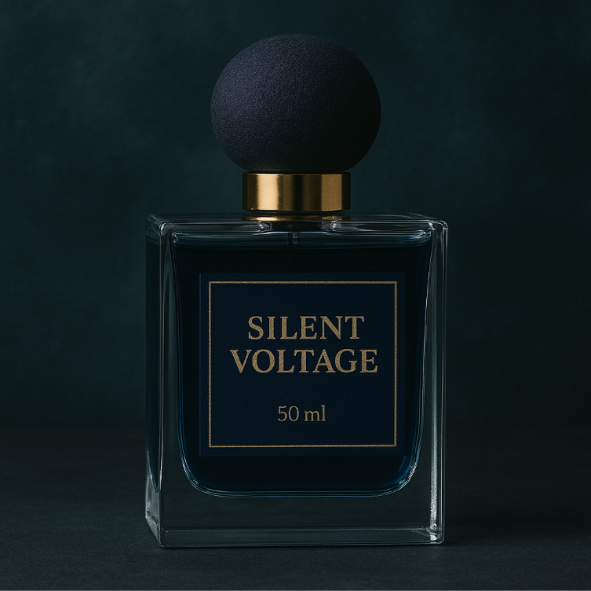

← Zurück zur Übersicht

Silent Voltage
115CHF / 50 ml
Beschreibung
Silent Voltage weckt Ihre Sinne mit elektrisierender Frische. Citrusige und aquatische Noten erzeugen eine belebende Energie, die den ganzen Tag anhält.
Duftnoten
Kopfnote: Limette, Ozonnoten, Minze
Herznote: Meersalz, Eukalyptus, Zedernholz
Basisnote: Ambergris, Weißer Moschus, Driftholz
Charakter
Frisch, energetisch, aquatisch